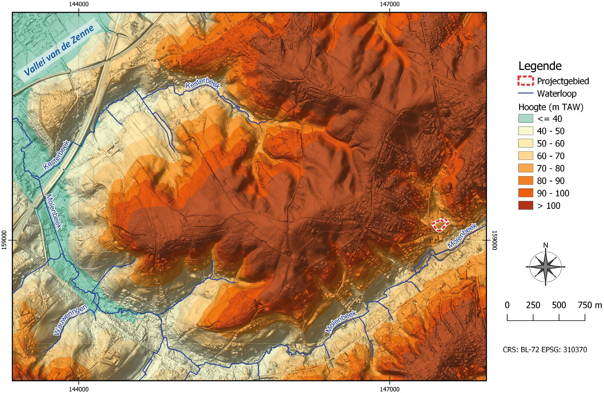
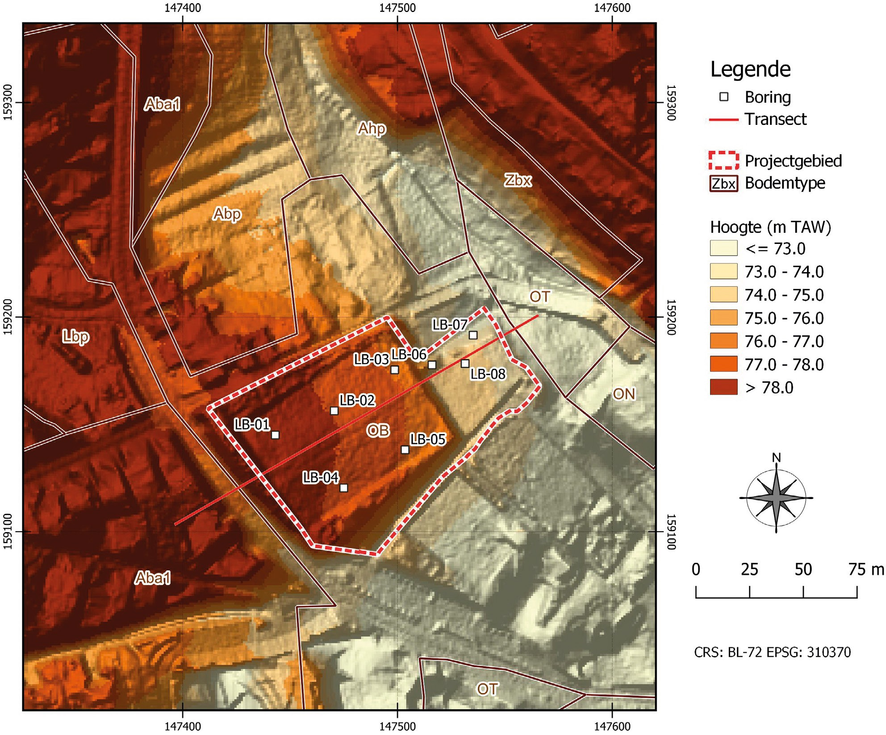
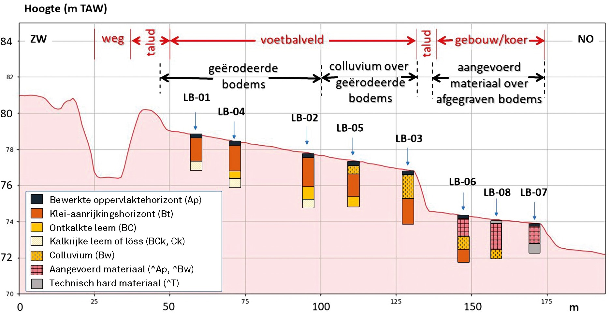
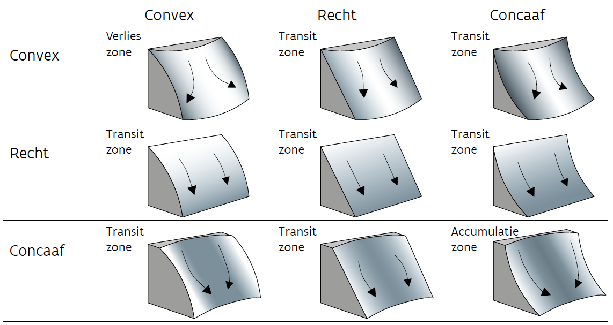
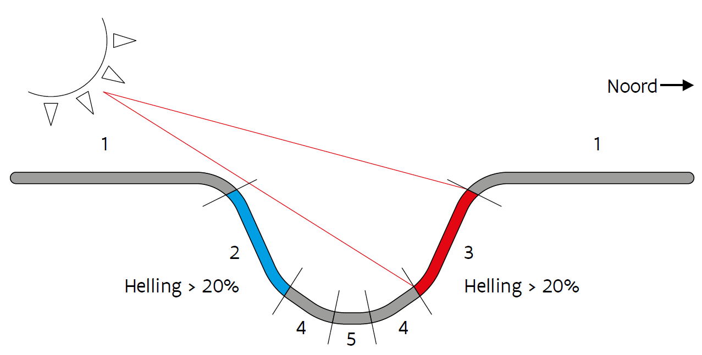

De informatie omtrent moedermateriaal, substraat, geomorfologie, bodemhydrologie, hedendaags landgebruik en bodembedekking, antropogene invloed op het landschap en erosie en sedimentatie (3.1 tot 3.7) die hier gevraagd wordt, is bedoeld om de beknopte tekstuele beschrijving van het bodemprofiel inclusief interpretatie te kunnen opstellen. De bodemvormende factoren worden bepaald aan de hand van een bureauonderzoek in combinatie met eigen veldobservaties.
3.1 Moedermateriaal
Beschrijf tijdens het veldwerk het moedermateriaal en eventuele dieperliggende substraten. Het moedermateriaal is de afzetting, het sediment of het gesteente waarin de bodem zich heeft ontwikkeld en waarin geen of bijna geen herkenbare bodemvorming is opgetreden. Voor meer informatie over het moedermateriaal en het substraat (§ 3.2) kan de Bodemkaart van België of de Quartairgeologische Profieltypekaart van Vlaanderen worden geconsulteerd (zie bv. www.dov.vlaanderen.be).
Voorbeeld
Kalkhoudende Brabantiaan löss. Kalkhoudende pleniglaciale dekzanden. Kalkloze laatglaciale dekzanden. Holo- cene stuifzanden. Kalkhoudend Holoceen alluvium. Groene Tertiaire zandige klei. Kalkhoudende kustduinzanden. Kalkhoudende polderklei.
3.2 Substraat
Het substraat is een sediment of gesteente dat zich onder het moedermateriaal bevindt en er duidelijk van verschilt. Het substraat kan bijvoorbeeld het vochtregime van de bodem sterk beïnvloeden. Vermeld steeds de diepte waarop het substraat zich bevindt.
Voorbeeld
Tertiaire zandige klei onder 80 cm löss.
Maasgrind onder laatglaciale dekzanden, op een diepte van 30 cm
3.3 Geomorfologie
3.3.1 Algemeen reliëf
Maak onderscheid op basis van de schaal:
Macroreliëf: op schaal van een gemeente of dorp.
Mesoreliëf: op schaal van een huis, een boerderij.
Microreliëf: kleine elementen die belangrijk zijn voor de aanleg van een gracht, een waterput, een silo.
Voorbeeld macroreliëf
- De samenvloeiing van Schelde en Leie; zie figuur 1 voor een voorbeeld van macrorelief.
Voorbeeld mesoreliëf
- Voethelling; zie Figuur 2 voor een voorbeeld van mesoreliëf.
Voorbeeld microreliëf
- In een geul; zie Figuur 3 voor een voorbeeld van microreliëf.
3.3.2 Hellingspositie, hellingsvorm en oriëntatie
3.3.2.1 Hellingspositie
De positie van de bodemobservatie op de helling is belangrijk. Niet alleen heeft de helling invloed op de externe en interne drainage, maar ook op het risico voor erosie en sedimentatie (colluvium). Waar mogelijk wordt de landschapspositie van het projectgebied best door kaarten en transecten geïllustreerd (zie voorbeelden, fig. 3.1, fig. 3.2 en fig. 3.3).



3.3.2.2 Hellingsvorm (fig. 3.4).
Dikwijls is er een verband met de erosie/sedimentatie processen veroorzaakt door water (tabel 3.1).
| Categorie | Omschrijving |
|---|---|
| Vlak | Geen of weinig erosie (horizontaal) |
| Convex | Erosiegevoelig |
| Recht | Erosiegevoelig; hoe langer de helling, hoe groter het risico op erosie |
| Concaaf | Zone van sedimentatie (colluvium) |
| Complex | Onregelmatig |

3.3.2.3 Hellingsoriëntatie - expositie
De oriëntatie is bepalend voor enerzijds de hoeveelheid neerslag en zonne-energie die de helling ontvangt en ander- zijds voor het effect van de wind op de helling, en is daarom belangrijk om te noteren (Figuur 5). Duid de oriëntatie van een helling aan met de windrichting.
Voorbeeld:
ONO: betekent dat de helling gericht is of kijkt naar het oostnoordoosten.

3.4 Bodemhydrologie
3.4.1 Extern waterregime
Het extern waterregime ter hoogte van de aardkundige observatie wordt onder andere bepaald door de topografie. Is de bodem gelegen in een zone waar water eerder naar toe vloeit of net het omgekeerde? Maak volgend onderscheid (tabel 3.2).
| Categorie |
|---|
| Water toevoer |
| Noch toevoer noch afvoer van water |
| Water afvoer |
3.4.2 Actuele watertafel
Meet de diepte in cm tot aan de watertafel na beëindiging van de boring of bodemobservatie. Noteer hierbij na hoeveel tijd de waterstand werd gemeten.
Voorbeeld
Watertafel op 128 cm onder maaiveld, 55 min na beëindiging van de boring.
3.5 Hedendaags landgebruik en bodembedekking
Categorieën van de combinatie van landgebruik en bodembedekking. De lijst van voorbeelden kan verder worden aangevuld:
Voorbeelden
Akker
Ingezaaid grasland
Grasland zonder begrazing (hooiland)
Grasland met begrazing
Boomgaard (met gras, zonder gras)
Houtkant en struiken
Duinen met of zonder vegetatie
Loofbos (gesloten, open…)
Naaldbos (gesloten, open…)
Gemengd bos (gesloten, open…)
Moeras
Veen
Heide
Braakliggend
Residentiële zone
Stad, dorp, bewoning
Industriezone
Recreatiezone (bv. park, voetbalplein…)
Ander landgebruik
3.5.1 Plantensoorten (vegetatie)
Noteer, indien relevant, het vegetatietype en de belangrijkste plantensoorten.
Voorbeelden
Naaldbos van grove den (Pinus sylvestris), natte heide met dopheide (Erica tetralix); droge heide met struikhei (Calluna vulgaris); beukenbos zonder ondergroei (Fagetum nudum); akker met suikerbieten.
3.6 Antropogene invloed op het landschap (terreinobservaties)
Huidige en/of vroegere menselijke activiteiten kunnen zichtbare sporen op het terrein achterlaten. Deze sporen hebben mogelijk het landschap of de fysische en chemische eigenschappen van de bodem (geen erosie) beïnvloed. Dit kan belangrijk zijn voor de interpretatie en de eventuele bewaring van een archeologische site. Hieronder vind je een lijst met voorbeelden van zo’n activiteiten.
Voorbeelden (meerdere keuzes zijn mogelijk)
Vegetatie (zwak/matig/ernstig verstoord)
(Diep)ploegen
Plaggen
Beddenbouw
Nivelleren
Ophogen
Afgraven (ontginnen)
Afgraven (greppels)
Drainage (bv. via buizen of grachten)
Bodemverdichting (betreden, berijden)
Spoorvorming door berijden
Bodemafdekking (weg, oude vloer, asfalt…)
Ontruiming (bv. van bos of gebouw)
Bosexploitatie
Verontreiniging (bv. olie, bouwafval)
Archeologie (zichtbaar, bv. grafheuvels of dijken)
Overige (toelichten)
3.7 Erosie en sedimentatie
3.7.1 Type
Beschrijf erosie en sedimentatie volgens het type: watererosie, winderosie, (bodem)bewerkingserosie, massabewe- gingen (aardverschuivingen…). Meerdere vormen tegelijk zijn mogelijk.
Voorbeelden
Geen erosie
Erosie door water
Laagsgewijze erosie door water
Geultjeserosie door water
Ravijnerosie door water
Tunnelerosie door water
Sedimentatie door water
Erosie door wind
Sedimentatie door wind
Erosie gerelateerd aan dierlijke activiteit (konijnen, vossen, koeien etc.)
Erosie gerelateerd aan menselijke activiteit
Nivelleren (erosie en sedimentatie veroorzaakt door de mens)
Sedimentatie, gerelateerd aan menselijke activiteit
Massabeweging (grondverschuivingen etc.)
3.7.2 Activiteit
Beschrijf de periode van erosie/sedimentatie (tabel 3.3).
| Geen erosie in het Holoceen (bosbestanden) |
|---|
| Versnelde en natuurlijke erosie niet waargenomen |
| Periode van activiteit niet gekend |
| Actief in de prehistorie |
| Actief in de historische periode |
| Actief in een recent verleden (laatste 100 jaar ongeveer) |
| Tot op vandaag actief |